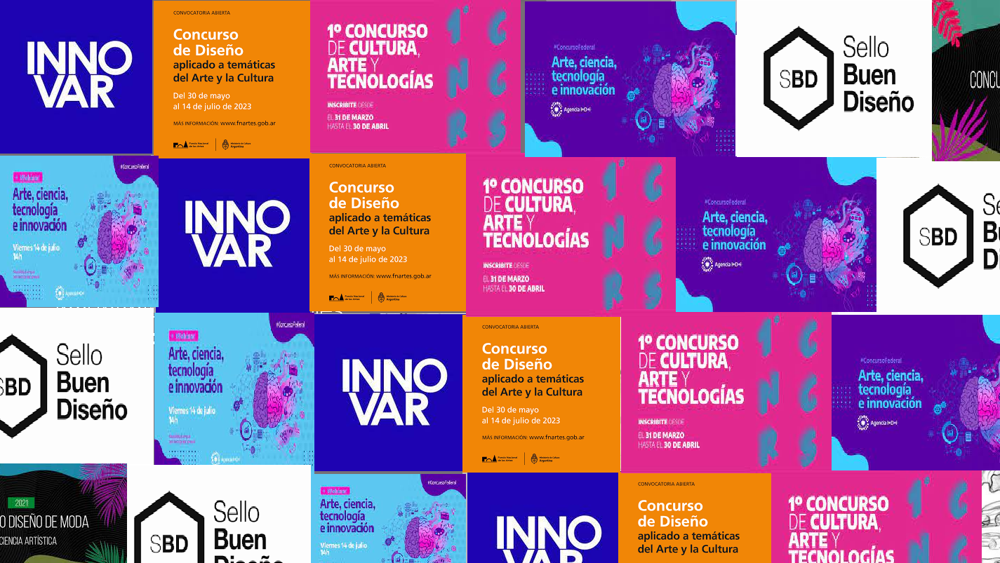
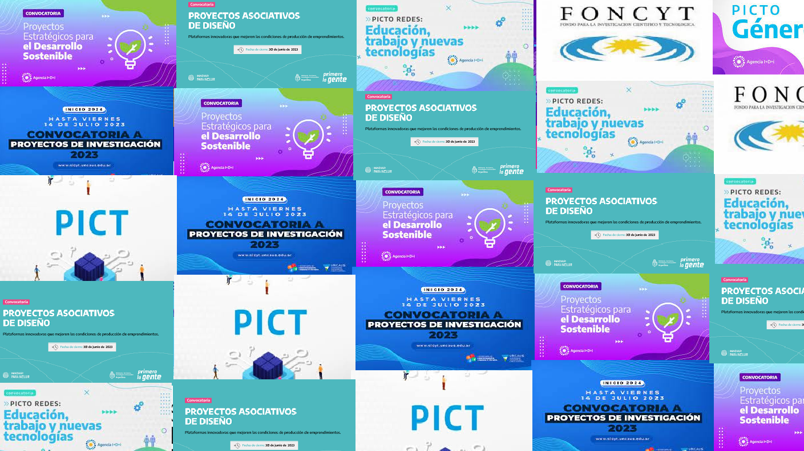

Incubadora de Diseño
Modelos de IncubaciónTENÉS UN PROYECTO Y QUERÉS SABER SI ES INCUBABLE?
NOSOTROS TE AYUDAMOS!
Entrá a nuestra incubadora de Diseño intra-institucional y pedí asesoramiento para ver en qué modelo de incubación te conviene postularte. Conocé el grado de innovación y segmentación para lograr el ingreso a los nuevos mercados laborales.
INCUBADORA DE DISEÑO UNLA PARA TIFS Y PPP
Las incubadoras intra-institucionales como mecanismo de innovación y progreso hacia el ingreso a los nuevos mercados laborales post-pandemia.
En esta página web encontrarán los diferentes modelos de incubadora para proyectos de diseño, orientados a incubar TIFs y PPPs, que podrán albergar desde la presentación a concursos y convocatorias hasta la puesta en marcha de Empresas de Base Tecnológica e Industrial propuesto para la Universidad Nacional de Lanús. exponiendo los puntos estratégicos fundamentales para el éxito de la incubadora y los posibles parámetros para determinar la viabilidad de incubación de un proyecto de diseño.


MODELOS DE INCUBACIÓN INICIAL
MODELO 1: CONCURSO
La incubadora de concursos se encarga del asesoramiento
y acompañamiento para la presentación del proyecto en
un concurso de caracter nacional o internacional.
Dirigida a cualquier postulante con una propuesta, ya sea
en fase de desarrollo o completamente desarrollada, y que
destaque por su singularidad, tiene la oportunidad de
considerar su participación en un concurso, a nivel
nacional o internacional, representando a la UNLa, y/o a un sponsor.

MODELO 2: CONVOCATORIAS
La incubadora de convocatorias ofrece asesoramiento y
acompañamiento para la presentación en
una convocatoria que brinde financiamiento para el
desarrollo del proyecto.
Dirigido a cualquier individuo, o equipo de investigación
que tenga una idea proyecto o formulación de la misma,
capaz de ser presentada a una convocatoria nacional o internacional, para solicitar
financiamiento para el desarrollo de la misma.

MODELO 3: LLAVE EN MANO
La incubadora de proyecto llave en mano ofrece
asesoramiento y acompañamiento para la formulación y
presentación de TIFS y/o PPP de una carpeta técnica de
proyecto llave en mano.
Dirigido a cualquier individuo o equipo, que tenga un
proyecto o idea, o que detecte la necesidad de mercado
para la confección de una carpeta técnica que contenga todos los componentes con los cuales llevar adelante un Proyecto llave en
mano.
MODELOS DE INCUBACIÓN AVANZADOS
MODELO 4: CODIGO ABIERTO
La incubadora de proyecto código abierto ofrece
asesoramiento y acompañamiento para la formulación y
presentación de TIFS y/o PPP desarrollados para brindar
soluciones de proyecto código abierto.
Dirigida a cualquier individuo o equipo, que tenga un
proyecto o idea, o que detecte la necesidad de mercado
para la confección de una formulación de un proyecto de
código abierto.
MODELO 5: EMPRENDIMIENTO/EMPRESA
La incubadora de empresas de base tecnológica ofrece
asesoramiento y acompañamiento para la formulación y
desarrollo de TIFS y/o PPP y el montaje de una empresa.
Pueden presentarse individuos o equipos de
emprendedores/as que tengan una idea de negocios, en
etapa de proyecto o como emprendimiento en marcha.

MODELO 6: LANZAMIENTO
La incubadora de lanzamiento ofrece asesoramiento para el desarrollo de una línea, familia, serie, producto
y/o servicio en un emprendimiento, pyme, etc, para un
segmento definido del mercado.
Dirigido a emprendedores/as que
tengan una idea de negocios, en etapa de proyecto y que
necesiten de la inserción de un producto,
familia, línea, serie o servicio, a través de launching.